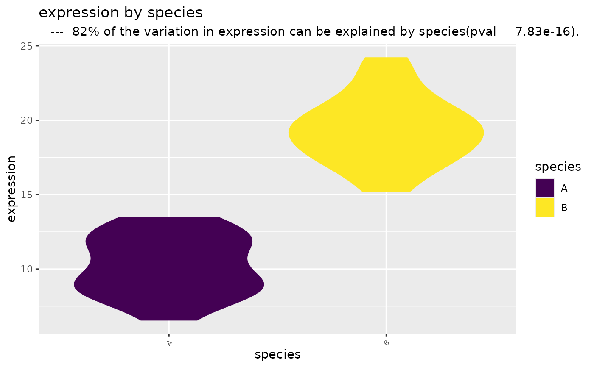

This function performs univariate linear analysis of a dependent and an independent variable and generates a viloin or box plot to illustrate the associated structure.
Usage
variable_by_factor(
dep,
indep,
dep_name = "dependent",
indep_name = "independent",
orderfactor = TRUE,
violin = TRUE
)
Arguments
- dep
a vector of the dependent variable
- indep
a vector of the independent variable
- dep_name
name of the dependent variable
- indep_name
name of the independent variable
- orderfactor
order factors alphebetically
- violin
box plot or violin plot. violin = TRUE is default
Examples
x = c( rnorm(20, 10, 2), rnorm(20, 20, 2) )
y = as.factor( c( rep("A", 20), rep("B", 20) ) )
variable_by_factor(dep = x , indep = y, dep_name = "expression", indep_name = "species" )
